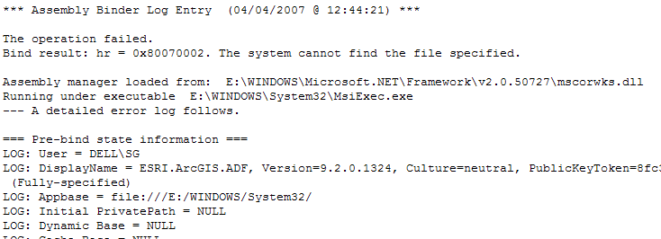
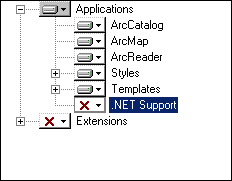

Windows Installer Woes¶
- date:
2007-02-20 00:26
- author:
geographika
- category:
bugs
- slug:
windows-installer-woes
- status:
published
Finally…all the major bugs have ironed out for a new custom ArcMap tool, a “simple” installer package has been created in Visual Studio and emailed to a colleague for testing. I can now turn off the computer happy in the knowledge that the project is thankfully out of my hands for a few days.
First email the next day..it wouldn’t install, there were errors. Specifically:
“Unable to get installer types in the [name of DLL] assembly. –> Unable to load one or more of the requested types. Retrieve the LoaderExceptions property for more information. “
Well I never did work out how to retrieve the LoaderExceptions property, but after seemingly recreating and installing in an infinite loop I ascertained the following:
i) The DLL I was installing relied on another custom made DLL that had to be installed on the system to even allow the package to run.
ii) On my development machine the latest DLL had been registered as it was part of the same Visual Studio solution.
iii) On the test machine an older version of the DLL was still being used. I believe this lacked a new class I had since added that was in turn required by the new DLL. This had to be removed, and the latest version of this DLL installed.
iv) Hindsight has 20/20 vision…the new DLL and installer package were deployed without problems.
I believe this error also occurs when trying to install a DLL created on a machine with ArcGIS 9.x, on a machine with ArcGIS 8.x. This would be for the same reasons - a class which the custom DLL relies on has been added/modified/removed.
An invaluable tool in the whole install/uninstall process is the “Windows Installer CleanUp Utility”, downloadable from the Microsoft site at http://support.microsoft.com/kb/290301. This is very useful when the control panel’s Add/Remove Programs interface no longer seems to work.
UPDATE
This error has since made a few reappearances, but this time for a different (albeit) similar reason. After several fruitless hours I decided I would make the effort to “Retrieve the LoaderExceptions property for more information.”
There is a useful program named FUSLOGVW.exe. I found this in C:\Program Files\Microsoft Visual Studio 8\SDK\v2.0\Bin\ - it had been installed as part of Visual Studio 2005. This progam logs exceptions for “failed Assembly binds” - further details can be seen on MSDN here.
I set the program to record all application binds for my installation and set the custom log path to the folder where the .DLLs would be installed:
` <http://geographika.files.wordpress.com/2007/04/fuslogvw.png>`__` <http://geographika.files.wordpress.com/2007/04/fuslogvw.png>`__
{kind=link}

Just after the error message popped up I hit refresh and was pleasantly suprised to see the log viewer had filled with entries as shown below.
` <http://geographika.files.wordpress.com/2007/04/fuslogvw2.png>`__` <http://geographika.files.wordpress.com/2007/04/fuslogvw2.png>`__
{kind=link}
This list included both successful and unsuccessful “binds.” Double clicking on the last entry opened up a browser with further details, including the fact that the “operation” had failed.
` <http://geographika.files.wordpress.com/2007/04/fuslogvw3.png>`__` <http://geographika.files.wordpress.com/2007/04/fuslogvw3.png>`__
{kind=link}
The (fairly obvious) clue was in the “system cannot find the file specified” when trying to bind to the ESRI.ArcGIS.ADF.DLL. One of my custom tools was trying to call functions in this file, but could not find it. I had excluded all ESRI DLLs from my setup package as I had assumed they would be on any machine with ArcMap…apparently not! By default the .NET support (basically all the ESRI .NET DLLs) are notinstalled. After modifying the ArcGIS installation from the DVD and adding this option the installation ran without further issues =)
` <http://geographika.files.wordpress.com/2007/04/install1.png>`__` <http://geographika.files.wordpress.com/2007/04/install1.png>`__
{kind=link}

A final point on this issue - I would recommend setting all your custom DLL version numbers manually. To check if this is already the case go to Project >> Properties >> Application >> Assembly Information, and make sure there are no asterisks amongst the version numbers.
- orphan:
Comments¶
1. Tweets that mention Will HTML5 Revolutionise Raster Web GIS? at geographika – Topsy.com **
[…] This post was mentioned on Twitter by Chris Veltman, geographika. geographika said: Will HTML5 Revolutionise Raster Web GIS? http://bit.ly/hkbint #html5 #gis […]
Reply2. James Fee GIS Blog » Blog Archive » Friday Web Map Fun **
[…] geographika ponders if HTML5 will change how we map raster graphics. I embrace that new world and hope it gets here sooner than […]
Reply3. Friday Web Map Fun « 懒得折腾 **
[…] geographika ponders if HTML5 will change how we map raster graphics. I embrace that new world and hope it gets here sooner than […]
Reply4. Friday Web Map Fun « Spatially Adjusted **
[…] geographika ponders if HTML5 will change how we map raster graphics. I embrace that new world and hope it gets here sooner than […]
ReplyAdd Comment